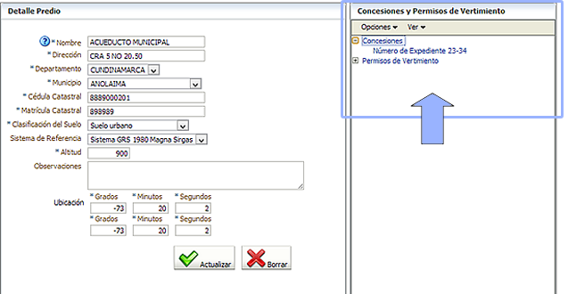

Ingrese la información del predio que hace uso del agua. Al finalizar de clic en el botón "Actualizar". Observe que apartir de esta sección usted podrá asociar la información de los actos administrativos gestionados en la Corporación para este predio:
Use el arbol disponible a la derecha para agregar más información.
